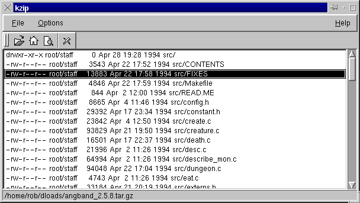

KZip Documentation

Introduction:
KZip is a program for managing and quickly extracting archives. It works
closely with KFM and various other parts of the KDE environment. Current
features include, a quick list of archives
in a user defined directory, quick extraction
of archives to any directory, and adding
files via drag and drop from kfm.
Requirements:
-
The latest version of KDE. KDE is still alpha so not everything will work
perfectly. It can be found on ftp.kde.org.
-
Recent versions of tar and gzip. If your version of tar and/or gzip don't
work properly with kzip please mail
me.
-
A link from gunzip to gzip.
-
KFM is needed to get full functionality from kzip.
-
Qt v1.30. Information regarding Qt can found on www.troll.no
-
Lha
-
Unzip and Zip from INFO-ZIP.
Setting up your Archive Dir:
KZip will
automatically remember your archive dir. You must first set it via "Set
Archive Directory" from the options menu. Enter the full path, such as,
"/home/rob/dloads". To quickly go to this directory when kzip is running,
click on the home icon on the toolbar. A listing of all files in the archive
directory will then be shown. Double-click on an archive to open it.
Opening and Viewing Archives:
There are a few different ways to open an
archive. The first is done by clicking on either the open button on the
toolbar or by choosing open from the file menu. The second is done by
double-clicking on an archive in your archive directory.
Working with Files:
An archive must be opened before any work can be done with it. To view a
file in an archive double click on it or select view from the edit menu
after selecting a file. A dialog will come up asking for the program you
wish to view it with. Type in kless, kview, or whatever is appropriate for
that file. Select "Edit...Extract" in the menus to extract the selected
file to a directory of your choice. Select "Edit...Delete" to remove the
selected file from the archive.
Extracting Archives:
Once you have opened an archive it can be quickly extracted to any directory.
To do this either click on the extract button on the toolbar or choose
"Extract To" from the file menu. A dialog will come up asking you for the
destination directory. Type in the full path, such as, "/home/rob/new_kde_stuff".
This directory should already have been created by you. A progress indicator
will popup showing just that, and disappear when finished.
Creating and Adding Files to Archives:
To create a new archive choose new from the file menu. Files can be added
to an open archive by dragging them in from KFM. Whole directories and
multiple files can dropped on KZip at once.
Contact me at:
robertp@macatawa.org
Any suggestions and/or bug reports are welcome.